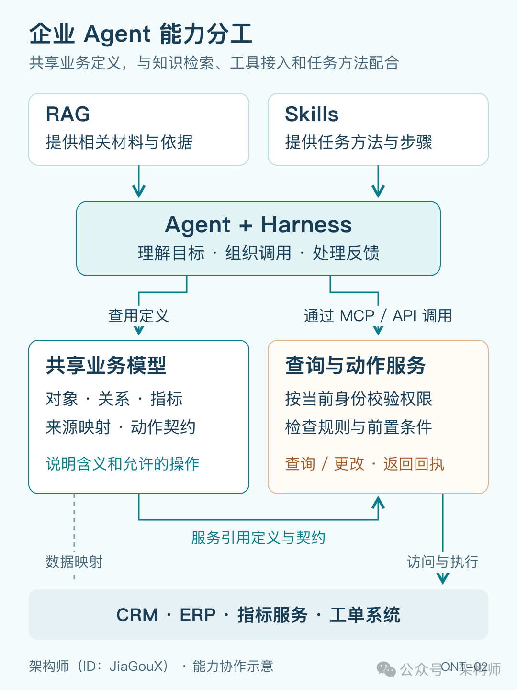
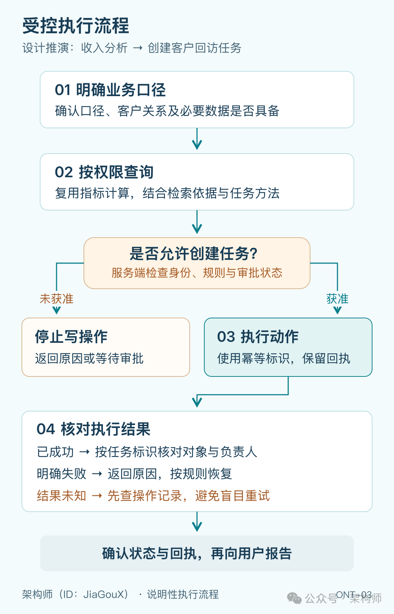

从 RAG、MCP、Skills 到 Ontology First：如何搭建企业 Agent
来源：微信公众号 归档日期：2026-11-08 抓取状态：成功 原文字符：12793｜配图：3 张
摘要速览
- 以「找出本季度收入下降的客户、分析原因并为客户经理创建回访任务」为例，讨论搭建企业 Agent 的关键：流程能跑通但业务口径可能错（客户映射、收入定义、比较期间、负责人需可追溯）；同一份口径尽量只维护一处，复用已有指标/领域模型/业务 API；RAG、MCP、Skills 各司其职，反复使用的定义应有共同依据（Ontology First），让查询和执行实际用上它。
核心内容
（待补充）
可执行启发
（待补充）
我的想法
（待补充）
原文沉淀
目录
架构师（JiaGouX）
我们都是架构师！ 架构未来，你来不来？
“找出本季度收入下降的客户，分析原因，并为客户经理创建回访任务。”
张总的公司最近找朋友搭了个企业知识库 + Agent，效率提升了不少。这不，今天周末，张总吃完晚饭，就顺便问了一句。
平时把这件事交给同事，也差不多就是这么一句话。总不能每次布置工作，都先解释一遍公司的收入制度和客户管理办法。
可 Agent 接到这句话，未必知道公司里的这些约定。
收入，是签单额、开票额，还是财务确认收入？财务系统里的付款主体，跟 CRM 里的客户怎么对上？客户经理上个月刚换过人，回访任务该交给谁？
这些问题，模型再聪明也没法凭空猜准。麻烦的是，即使没弄清楚，Agent 也可能照样查数、写报告，最后把任务建出去。
把今年聊过的 Skills、Context System 和 Harness 放回这个场景，我越来越在意一个问题：哪些事情可以让模型灵活处理，哪些业务约定需要先固定下来？
最近读 Ontology First 的讨论，我觉得它值得借鉴的地方就在这里：让反复使用的业务含义有一份共同依据，并让查询和执行实际用上它。顺着张总这句话往下推，几处容易走弯路的地方，也就逐渐清楚了。
太长不看
- 流程能跑通，业务口径也可能是错的。
客户映射、收入定义、比较期间和负责人，得能追到明确出处。SQL 没报错、报告写得顺，都不能代替核账。
- 同一份口径，尽量只维护一处。
已有指标、领域模型和业务 API 能复用就复用。RAG、MCP、Skills 继续各司其职；反复使用的定义，再逐步提成共享能力。
- 查到记录，还不能直接下结论。
投诉可能是收入下降的线索；没查到投诉，也可能是权限或同步问题。原因需要证据，缺口要留在结果里。
- 写入前重查，写入后核对。
分析时的负责人可能已经变了；请求超时也不代表创建失败。执行依赖当前条件、幂等和业务回执，正式口径的修改另由负责人确认。
共享口径
先看看张总的系统已有的能力。一个收入分析 Skill 写清口径，再配上可靠的查询工具，完全可能把这次任务做好。
今年聊 Skills 与 MCP 时，我们把“工作怎么做”和“外部能力怎么接”分开了。这里也是一样：RAG，也就是检索增强生成，找收入制度、合同和客户沟通记录；MCP（Model Context Protocol）接入财务、CRM 等系统的工具和资源；Skills 组织分析收入、准备回访的步骤和材料。
复用到别的流程时，口径该放在哪里，就值得重新考虑了。
假设明天财务也做一个 Agent，后天客服再做一个，大家都要用“客户”。销售的 Skill 写一遍客户映射，财务的提示词再写一遍，客服的工具说明里又留一份。客户关系变了，这几处得一起改；漏掉一处，同一家公司就可能被算进不同范围。
组织回访的方法、报告的写法，各个 Skill 可以不同；客户标识、收入定义、负责人从哪里查，值得有一个共同出处。如果目前只有一个对象少、规则稳定的小任务，清楚的接口加一份说明也可以先用。
Ontology 通常译为“本体”，描述一个领域里的概念、属性、关系和约束。张总这次需要的，就是把客户、收入、负责人之间的含义说清楚，并接到真实数据上。至于能否进一步连接业务动作，不同产品做到的范围有差别。
| 能力 | 放在张总这次任务里 |
|---|---|
| RAG | 找制度、合同、客户记录，补充分析依据 |
| MCP | 接入查询收入、查负责人、创建任务等能力 |
| Skills | 组织分析与回访的工作方法 |
| Ontology | 说明用哪个客户、哪种收入、什么关系和规则 |
RAG 可以检索本体定义，MCP 可以提供查询本体的工具，Skill 也可以引用这些定义。不同 Agent 引用同一份客户定义时，能够查看、修改哪些客户，仍由各自的身份和权限决定。

图 1：企业 Agent 能力分工（组件可以复用已有系统，不必照图另建一整套平台）
先把账算对
张总拿到一份下降名单，第一件事大概是问财务：这几个客户的数，对不对？
核对时，很可能连“同一个客户”都要重新确认。CRM 里的客户可能对应几个财务付款主体，也可能只是集团下的一家子公司。按集团看收入，跟按签约主体看，下降名单就可能不同。这时候继续改报告的提示词，名单也不会因此变对。
因此，第一步要有稳定的客户标识，以及它和各个源系统记录的对应关系。名字相似可以当匹配线索，不能直接合并。我们在《企业知识库：本体论到底解决什么问题》里讨论过签约主体和收款主体：材料都找到了，也不能因为两端都是公司，就混用两种关系。付款主体映射到销售账户，同样需要业务依据。
收入也要选定。假设一个季度签单 120 万元、开票 100 万元、确认收入 80 万元，三个数都可能没错。张总这次要看哪一个，季度按哪个日期算，退货怎么扣，下降跟上季比还是跟去年同期比，都影响结果。
今天是 11 月 8 日，本季度还没过完。拿一个多月的数据跟上个完整季度比，下降并不稀奇。是否比较相同进度，要先约定。到了查询里，还得看数据粒度：一张订单关联多张发票，关联后再求和，就可能把同一笔金额加几遍。SQL 可以正常执行，账却算错了。
负责人则要带着时间看。解释上季度业绩，可能需要当时的负责人；今天创建回访任务，要找现在的负责人。再假设一次交接 10 月生效、11 月才补录，“现在回看 10 月归谁管”和“当时系统认为归谁管”，答案也可能不同。业务生效时间与系统记录时间的区别，就是双时态建模处理的问题。有追溯需要时再做，不用一开始全部做满。
这与《一文讲清 Agent 如何理解业务》里讨论的是同一件事：识别出用户想干什么之后，要对着具体对象，按当前状态、身份和适用规则继续处理。这里的“当前”，有时还得先弄清指的是哪个时间。
整理到这里，还容易走向另一个极端：既然客户定义不一致，干脆全公司统一成一个。
销售账户、财务付款主体、售后服务对象，本来就可能服务不同工作。分别保留，再说明怎样关联、哪些情况下可以合并统计，往往更合适。这也是领域建模中“限界上下文”的用处。财务确认收入和销售签单额都有用途，为了统一名称选掉一个，反而丢了业务含义。
还有些约定根本不在表里。Laurens Nys 在 X 上提到，合同优先顺序、子公司与品牌的关系、账户停滞时谁能拍板，都可能只在员工脑子里。数据库扫不出来，就要找业务人员确认。客户经理说“已经交接了”，也只能先记下这条信息，正式归属仍要核对 CRM 的规则和记录。
如果已经有知识图谱，可以继续用。图谱通常承载具体实体和关系，本体约定它们的含义；GraphRAG 利用图结构帮助检索和组织答案。文档里抽出了“客户 A”和“付款主体 B”，还需要确认两者是什么关系，不能因为它们出现在同一张图上，就直接合并统计。
复用优先
到这里，如果顺手新建一套“Agent 专用收入口径”，维护问题就又绕回来了。做过业务系统的朋友大概也会觉得熟悉：领域模型、指标平台、CRM，不就在管这些吗？
确实。搭 Agent 时，我会先找财务已经认可的收入口径、指标平台里的计算逻辑，以及 CRM 的交接记录。已有明确维护者和修订记录的，就接着用。另写一份 Agent 专用解释，以后反而多一处要同步。
微软 Fabric IQ 的 Ontology 预览功能里，我比较认同的一点，就是从 Power BI 语义模型生成本体，复用已有表、列、关系和指标。DAX 度量值的表达式仍由源模型持有，本体保留来源和业务上下文。公司已经认可的计算逻辑，没必要到了 Agent 这里重新解释一遍。
缺少的部分，可以让模型帮忙整理初稿。NVIDIA Auto Ontology 从数据库结构、样本和查询历史生成术语、SQL 表达式及表关系，之后由人修订、认证，再用于问答。定义和嵌入存在 Postgres、pgvector 中，向量检索照样参与工作。它的 MCP 目前面向只读问答和语义层检查，创建回访任务还需要另接写接口。
生成出一套完整定义，容易让人觉得已经做完了。但两个客户是否应该合并，收入公式适用什么业务范围，往往不能只靠库表猜出来。2026 年 2 月的 OntoEKG 研究，在其特定方法中报告过类与实例混淆、层级关系弄反、建模范围难确定等问题。
所以 NVIDIA 这套“生成后再确认”的次序值得保留。模型可以省掉一部分整理工作，客户映射和业务口径仍要有人认。
查询与归因
口径确认了，还有个不太显眼的问题：文档里写对了，实际查询未必用上了。
张总这次用哪个客户范围、哪种收入、哪个比较期间，公司有明确默认值，就引用；没有，又足以影响结果，就追问。确认后，要把这些选择交给实际计算的服务。
假设业务人员确认了下面这份查询约定。指标名和版本只是示意：
客户范围：集团客户，使用已确认的付款主体映射
收入指标：财务确认收入，recognized_revenue@v3
比较期间：本季截至昨日，对比上季相同进度
结果粒度：每个集团客户一行
返回依据：客户 ID、两期金额、映射版本、数据截至时间Agent 选择这份约定，查询服务据此调用已有指标和映射，完成聚合。MCP 可以把服务接进来，已有可靠 API 也可以继续用。金额计算、对象映射和数据权限，由服务实际落实。
如果只在文档里写了 recognized_revenue@v3，计算时仍让模型自己拼公式，这个版本号就没有约束查询。指标找不到、映射有冲突、源数据缺了一段，服务也要把缺口返回来，供流程决定补查、追问还是暂停。
查出“客户 A 收入下降 20%”以后，我会把两期金额、指标版本、映射版本、比较期间和数据截至时间一起留在结果里。否则隔天财务来问，这个 20% 用的是昨天哪套映射、哪个数据截面，还得重新找。下一步检索客户记录，也需要知道分析对象到底是谁。
做到这里，未必需要把原始数据搬进图数据库。AWS 的参考架构用 Ontop，通过映射把本体上的 SPARQL 查询改写成 SQL，交给关系数据库执行。这种虚拟知识图谱允许数据留在源系统，但映射仍要维护，查询性能受源系统影响，跨源数据也有一致性问题。只是查几个稳定指标，现有语义层加工具接口可能已经够用；复杂关系查询或形式化推理确有需要时，再补相应能力。
数核对上了，张总还等着听原因。Skill 可以继续组织后面的工作：检索合同、工单和沟通记录，核对缺口，整理可能原因，形成待回访名单。
这时可以分开看三样东西。“客户可以由客户经理负责”是定义，“客户 A 当前归李经理”是事实；本次张总能看哪些客户、分析哪个期间、这一步取了哪些记录，组成当前任务的上下文。定义相对稳定，事实随业务更新，上下文按任务选取，没必要都塞进一份静态说明。
《Context System 架构拆解》里，我们讨论过事实依据和任务工作集的区别。分析客户 A，就按权限取与 A 有关的指标、映射、负责人和证据，不用把整套公司资料装进窗口。EvoOntology 研究也给了一个实现思路：会话开始只给简要说明，需要细节时，再通过 MCP 的 browse 和 resolve 工具查找、读取。
假设恰好查到客户 A 的一条投诉，报告很容易就顺着写成“服务问题导致收入下降”。但这条投诉也许发生在金额已经下降之后，也许只涉及一笔小订单。找到了相关记录，距离解释原因还有一步。
反过来，没查到投诉，可能没有，也可能工单系统没接入、当前用户没有权限，或者数据尚未同步。结果要交代查了哪些来源、哪里有缺口。投诉可以是线索，与收入下降同时出现，还不足以认定因果关系。
共享定义能帮我们查清“谁的哪种收入下降了”，至于“为什么”，要由后续证据支持。查不清时，在报告中保留待核实项，比补出一个完整故事更有用。
这趟查询和分析的运行状态、模型与工具调用、预算和超时，可以由 Harness，也就是 Agent 的运行管理框架来管。跨运行的任务进度和人工接管，再接到任务系统。《Agent、Harness、Loop 到底怎么分》区分过这两个层次：一次运行停下来，整件工作还可能没有结束。
排查这类问题，光看最后那份报告不够。实际的工具输入输出、定义版本、数据来源和可用快照标识要留下。只记查询时间，未必能还原当时的数据；重新跑一次模型，也未必得到同样答案。
受控执行
张总的要求还有后半句。分析名单没问题，也不代表可以照着这份名单直接创建任务：从查数到写入，中间的业务状态可能已经变了。
Palantir 的 Action types 把参数、对象更改和校验逻辑组织为可复用动作，再通过 Ontology MCP 等入口供 Agent 使用。我们自己的系统，也可以复用已有业务 API。
回到张总这次任务，可以像前面的查询一样，先写清一份动作约定。下面是设计示意，不是某个产品的现成接口：
动作：为指定客户创建回访任务
输入：客户 ID、负责人 ID、分析记录 ID、幂等标识
前置条件：客户有效，负责人匹配，权限与审批通过
返回结果：操作标识、执行状态；成功后返回任务 ID
完成核对：按任务 ID 回读客户、负责人和任务状态无论从哪个入口调用，服务端都要根据当前用户、客户、负责人和状态检查权限；需要审批，就等审批通过。Skill 写了“先检查权限”，不能替服务端完成这次检查。
比如上午生成名单时，客户归王经理，下午审批通过时已转给李经理。照抄上午的负责人，任务就可能建错人；只把负责人换成李经理，也未必够。如果原审批明确针对王经理的任务，换人后是否重提，还得按审批规则处理。
分析时查过一次，不能代替执行前再确认。动作可以带上分析、审批和对象版本，执行时核对。相关状态处于同一事务范围内，可以用条件写入拒绝已经失效的请求；跨系统则可能刚查完负责人，对方又改了。哪些条件能够一起保证，剩下的时间间隙是否可接受，需要按具体系统安排。Sergey Vasiliev 关于事实纠正的文章，对此有更细的讨论。
本体约束与服务校验也各有职责。用 OWL 声明客户与负责人的关系，支持的是知识表达和推理；它采用开放世界假设，没记录不自动等于不存在，不能直接替数据库做“负责人字段必填”的检查。RDF 技术栈可以用 SHACL 校验数据图，普通服务则用类型检查、数据库约束和业务校验。数据合格以后，当前用户能不能执行动作，仍由执行服务判断。

图 2：受控执行流程（分析通过以后，按当前条件执行，再用业务回执核对结果）
执行后还有一个容易过早结束的地方：接口回了“已受理”，Agent 就向张总报告“已完成”。
《输出结果不等于完成任务》里聊过这个区别。CRM 收到了请求，只能说明请求到了。拿到任务标识，再按接口约定回读客户、负责人和状态，才能核对任务是否建对。若接口只返回“已受理”，就等实际创建结果。
任务建好，完成的是张总交代的“创建任务”。客户经理有没有真正回访，要看后续业务记录，不能共用一句含糊的“已完成”。
比“已受理”更麻烦的是超时：创建请求发出去了，结果没回来。把它当失败直接重试，任务也许会多建一条。这里需要幂等标识，以及按操作记录查结果的能力。明确失败和结果未知，要分开对待。
若还涉及财务、CRM、工单系统的多步操作，则按各系统能力安排重试或补偿。一个平台内部的事务，覆盖不了所有外部系统。原来业务系统做好的权限、审批和执行机制，在这里都有用。
定义演进
任务跑通以后，维护问题才会逐渐显出来。客户会转交，指标会调整，新问法也会暴露遗漏。如果所有变化都交给模型“自己学习一下”，很容易把几种性质不同的修改混在一起。
比如 Agent 找不到收入指标，可能是工具说明难找，也可能确实缺少定义。前者改说明就可能解决；误把它当指标问题，改了原本正确的业务定义，影响反而更大。
X 上 Rakesh Gohel 介绍 EvoOntology 时，关注的就是语义层随工作更新。论文的方法会分析运行轨迹，把问题归到内容、对象模型或工具接口，再提出局部修改。这种先定位问题、再局部调整的思路，比每次重新生成整套定义更有参考价值。
候选修改还要与原版本比较：固定模型、验证任务和交互预算，达到改进门槛才保留。论文 v2 将构建和演化作为适配过程，最终测试前冻结本体。这给了我们研究维护方法的参考，不能直接推出生产 Agent 可以随时改公司的正式口径。
放到张总的公司，我会分别处理几种变化。回访完成、负责人正式变更，按源系统确认结果更新事实；Agent 推测收入下降的原因，保留为带证据的待核实判断；财务调整收入口径，由相应负责人确认新定义和生效范围，再检查影响。
工具说明改得更好找，和财务确认收入的含义改变，影响范围不同。某个说法让模型更容易答题，也不足以证明它更符合业务实际。
沿用今年讨论 Loop 时的区分，一次任务里缺材料，可以继续补查；跨任务发现定义有缺口，则提出候选修改、验证并发布。后者会影响以后的使用者，需要另外确定谁能改、怎样验收。
如果 CRM 修正了客户映射，昨天的报告和今天待创建的回访任务也可能受影响。这时，前面留下的版本、证据和任务关联就有了用处：找出哪些结果需要重查。旧报告可以解释当时的判断，今天还能不能按它执行，要重新确认。
小步落地
真要给张总安排第一轮工作，我会先找财务、销售和 CRM 的同事，确认客户映射、收入入口、比较期间、负责人和创建条件。这一个任务先有核对的基础。
验收时，专门挑几个容易出错的例子：一个客户对应多个付款主体、上季收入为零、客户经理刚交接、数据缺了一段。上季为零时，环比下降率就不能照搬普通公式；负责人刚变时，旧名单也不能直接拿去创建任务。说不清预期结果的地方，先约定追问什么、在哪一步暂停。
然后跑只读分析，核对客户范围、金额和原因证据。能核对之后，再接创建回访任务，复用已有权限、审批、幂等和结果查询。
AWS 的指南建议从一个领域和代表性问题开始；Harsh Dalal 的 Agent-First Ontology Design 则主张从 Agent 实际失败里找模型缺口。我觉得这两种建议可以一起用：先确认当前工作少不了的定义，运行后再补确实影响结果的部分。Ontology First 在这里是一种设计次序，不需要等全公司的模型建完才开始。
比较修改前后，可以固定模型、数据、任务和工具预算，分别看客户名单与金额是否正确、原因有没有证据、任务是否建给正确的人，再看调用次数、时延和人工修正量。假如只让大家给最终报告打分，就很容易漏掉前面那些账和状态的问题。
共享模型也有查询和维护成本。只有一个稳定流程，业务 API 加 Skill 可能更省事；第二个、第三个流程开始重复解释客户关系和收入口径，才更容易看见共享维护的收益。Zach Wilson 提出，让维护 dbt 模型的分析工程师继续维护由它生成的 Agent 上下文，这种沿用现有分工的办法可以参考。具体到这里，财务确认指标，数据团队维护映射和质量，CRM 团队管交接与任务动作。
这也把今年几篇讨论接了起来：Skills 留下可复用的工作方法，Context System 按任务提供事实，Harness 管一次运行与工具调用；跨运行的任务交给任务系统。共享业务模型则让这些能力引用同一套业务含义，各自有清楚的修改位置。
出了问题，就有机会顺着出处查：关系没定义，补定义；数据没同步，修链路；权限不够，处理权限。都塞回提示词，只会留下一份越来越难改的说明。
张总下次饭后再问一句，换一个 Agent，也能沿用同样的客户映射和收入口径；真要建任务时，仍按当下的负责人和权限执行。我理解的 Ontology First，值得做的就是这件事。
参考资料
- AWS Prescriptive Guidance：Semantic Layer for Agentic AI using Ontology, Symbolic Reasoning, and Virtual Knowledge Graph；Architecture、Best practices、Prerequisites and limitations。本文使用公开架构与实施建议，未部署实测（https://docs.aws.amazon.com/prescriptive-guidance/latest/semantic-layer-agentic-ai-ontology-reasoning-virtual-knowledge-graph/semantic-layer-agentic-ai-ontology-reasoning-virtual-knowledge-graph.html）。
- Abdulsobur Oyewale、Tommaso Soru：LLM-Driven Ontology Construction for Enterprise Knowledge Graphs，2026-02-01，arXiv:2602.01276v1。研究结论限于论文中的方法和数据（https://arxiv.org/abs/2602.01276）。
- Meiduo Chong、Shaolei Zhang、Ju Fan、Xiaoyong Du：EvoOntology: A Self-Evolving Ontology Layer for Data Agents，2026-09-14 首发，2026-11-02 更新 v2。本文采用按需访问、局部演化与配对验证机制，不外推为生产业务口径可以自主变更（https://arxiv.org/html/2609.15779v2）。
- Microsoft Fabric IQ：Ontology overview，预览功能，所引页面更新于 2026-10-16（https://learn.microsoft.com/en-us/fabric/iq/ontology/overview）。
- NVIDIA Auto Ontology：README、MCP 文档，依据 2026-11-06 提交
c447003f72a822301e927196a4ecb5b597c308d5。其 MCP 面向只读问答及语义层检查（https://github.com/NVIDIA/auto-ontology/tree/c447003f72a822301e927196a4ecb5b597c308d5）。
- Palantir：Ontology overview、Action types、Developer toolchain（https://www.palantir.com/docs/foundry/ontology/overview；https://www.palantir.com/docs/foundry/action-types/overview；https://www.palantir.com/docs/foundry/dev-toolchain/overview）。
- W3C：OWL 2 Web Ontology Language Primer，2012-12-11；Shapes Constraint Language（SHACL），2017-07-20（https://www.w3.org/TR/owl2-primer/；https://www.w3.org/TR/shacl/）。
- Ananth Packkildurai：An ontology for AI agents is a system，2026-08-14；Harsh Dalal：Agent-First Ontology Design: Build the Ontology After the Agent，2026-10-01。作为建模方法讨论参考（https://www.dataengineeringweekly.com/p/an-ontology-for-ai-agents-is-a-system；https://www.bluedataconsulting.co/blog/agent-first-ontology-design-build-the-ontology-after-the-agent/）。
- Sergey Vasiliev：Knowledge graph, memory graph and context graph — Part II: Designing the boundaries between the three roles，2026-10-28。本文借鉴其事实纠正、依赖重查与动作执行前检查的讨论，收入分析示例为本文设计（https://sergeyvasiliev.substack.com/p/knowledge-graph-memory-graph-and-b78）。
- X 讨论：Laurens Nys，2026-11-05，隐性业务知识（https://x.com/laurensnys/status/2118296300055589226）；Rakesh Gohel，2026-11-03，EvoOntology 的持续维护（https://x.com/rakeshgohel01/status/2117633068949283180）；Zach Wilson，2026-11-02，语义模型与 Agent 上下文的维护者（https://x.com/Zachly/status/2117353457472373137）。
如喜欢本文，请点击右上角，把文章分享到朋友圈
如有想了解学习的技术点，请留言给若飞安排分享
因公众号更改推送规则，请点“在看”并加“星标”第一时间获取精彩技术分享
·END·
相关阅读：
- 企业知识库：本体论到底解决什么问题？
- 一文讲清 Agent 如何理解业务：把对象、状态和权限接进执行流程
- Context System 架构拆解：让 Agent 从“找到资料”走到“可靠行动”
- Agent、Harness、Loop 到底怎么分？
- 输出结果不等于完成任务：Agent 最容易忽略的一环
版权申明：内容来源网络，仅供学习研究，版权归原创者所有。如有侵权烦请告知，我们会立即删除并表示歉意。谢谢!
架构师
我们都是架构师！

关注架构师(JiaGouX)，添加“星标”
获取每天技术干货，一起成为牛逼架构师
技术群请加若飞：1321113940 进架构师群
投稿、合作、版权等邮箱：admin@137x.com
归属：[[02-输入/按主题/AI与效率/_index|AI与效率]]